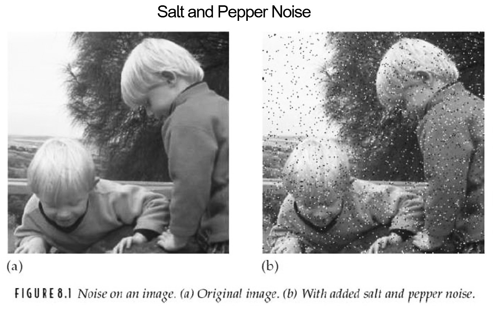
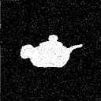
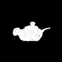
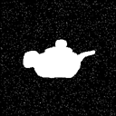

2진 영상0(0) 이나 1(255) 즉, 검은색과 흰색만을 가지는 영상을 처리하기 전에 smoothing으로 미리 영상의 잡음을 제거하는 일은 중요하다. 이 과정을 전처리라고 부르며, 이것은 이후의 영상처리를 쉽게하기 위해 미리 영상처리를 행하는 것을 말한다. 그러나, 전처리를 수행한 후의 출력 2진 영상에 잡음(noise)이 있을 경우, 후처리로서 잡음을 제거하지 않으면 안 된다. 2진 영상의 잡음은 아래 그림과 같은 salt-and pepper noise라는 잡음이다
이러한 잡음도 물론 미디언 필터로서 제거할 수 있지만, 2진 값으로 있는 영상 데이터를 이용한 [확장(expansion) - 축소(contraction)]라고 불리우는 처리가 있다. 확장 처리란 어떤 화소의 주변에 하나라도 1이 있으면, 그 화소를 1로서, 그 외에는 0으로 처리하는 것이다. 이것을 프로그램으로 살펴보면 다음과 같다.
¡ 수축처리를 위한 function
/***********/* function for contraction /**************/
void contraction(void){
int i, j;
/* 입력 영상데이터의 각 화소의 주변을 검사하여
LOW인 경우에는 출력 배열에 LOW값을 입력한다.*/
for(i = 1; i< SIZE-1; i++) {
for(j = 1; j < SIZE-1; j++) {
image_out[i][j]=image_in[i][j];
if (image_in[i-1][j-1] == LOW) image_out[i][j]=LOW;
if (image_in[i-1][j] == LOW) image_out[i][j]=LOW;
if (image_in[i-1][j+1] == LOW) image_out[i][j]=LOW;
if (image_in[i][j-1] == LOW) image_out[i][j]=LOW;
if (image_in[i][j+1] == LOW) image_out[i][j]=LOW;
if (image_in[i+1][j-1] == LOW) image_out[i][j]=LOW;
if (image_in[i+1][j] == LOW) image_out[i][j]=LOW;
if (image_in[i+1][j+] == LOW) image_out[i][j]=LOW;
}
}
}
¡ 확장 처리를 위한 function
/********** function for expansion /************/
void expansion(void){
int i, j;
/* 입력 영상데이터의 각 화소의 주변을 검사하여
HIGH인 경우에는 출력 배열에 HIGH값을 입력한다.*/
for(i = 1; i SIZE-1; i++) {
for(j = 1; j SIZE-1; j++) {
image_out[i][j]=image_in[i][j];
if (image_in[i-1][j-1] == HIGH) image_out[i][j]=HIGH;
if (image_in[i-1][j] == HIGH) image_out[i][j]=HIGH;
if (image_in[i-1][j+1] == HIGH) image_out[i][j]=HIGH;
if (image_in[i][j-1] == HIGH) image_out[i][j]=HIGH;
if (image_in[i][j+1] == HIGH) image_out[i][j]=HIGH;
if (image_in[i+1][j-1] == HIGH) image_out[i][j]=HIGH;
if (image_in[i+1][j] == HIGH) image_out[i][j]=HIGH;
if (image_in[i+1][j+] == HIGH) image_out[i][j]=HIGH;
}
}
}
다음 그림은 위의 프로그램을 적용 시켰을 때의 영상이다. 그림에서 볼 수 있듯이 이 처리를 확장 -> 수축으로 작용하면, 결과 영상은 확장되어 커졌다가 수축되어 결과적으로 별로 변화가 없지만, 까맣게 고립된 잡음이 확장될 때에 제거가 된다. 반대로 수축 -> 확장으로 작용을 하면 하얗게 고립된 잡음이 수축할 때에 제거가 된다.
 
(잡음 영상) (수축) (확장)

(잡음 영상) (확장) (수축)